Aktualny okres liturgiczny:
Do zrobienia skrypt
Przyjęcie Ministrantów
Dziś, 30 listopada 2025 roku, podczas Mszy Świętej o godzinie 10.00, nasza wspólnota parafialna przeżywała radosne i podniosłe wydarzenie. Do grona ministrantów zostało uroczyście przyjętych sześciu nowych chłopców, którzy przez ostatnie miesiące sumiennie przygotowywali się do tej posługi.
W obecności rodzin, parafian oraz służby liturgicznej złożyli oni swoje przyrzeczenia, wyrażając gotowość do wiernej i gorliwej służby przy ołtarzu. Ich entuzjazm i skupienie podczas ceremonii były pięknym świadectwem zaangażowania i młodzieńczej gorliwości.
Dziękujemy nowym ministrantom za podjęcie tego ważnego zadania i życzymy im wytrwałości, radości oraz ciągłego wzrastania — zarówno duchowego, jak i we wspólnocie, której od dziś są pełnoprawną częścią.
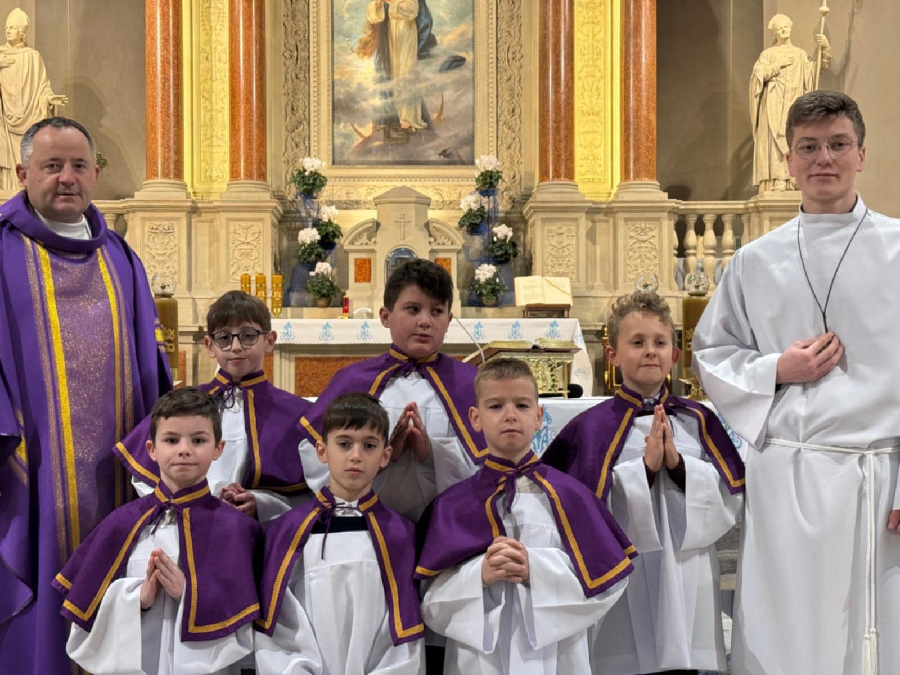
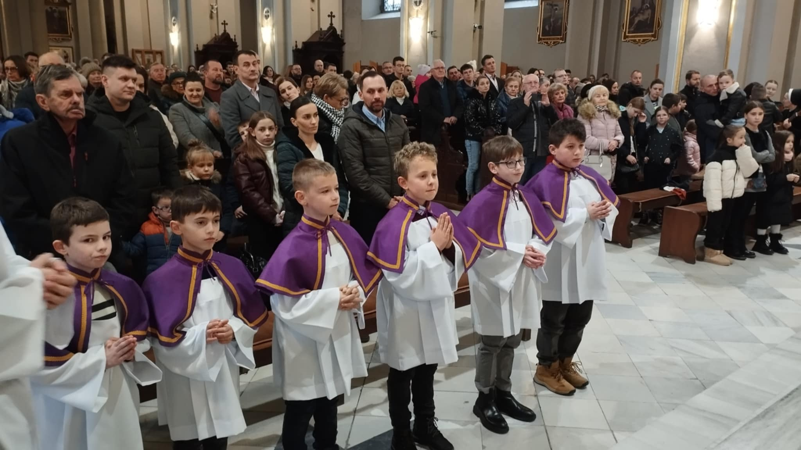
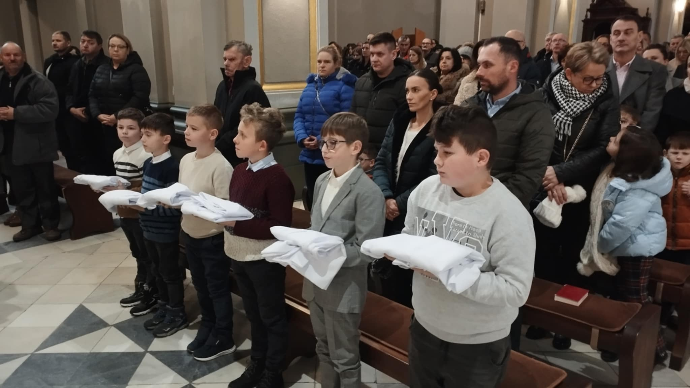
Eliminacje do XXX Mistrzostw w Piłkę Nożną
22 listopada 2025 r. w MZS nr 1 w Gorlicach odbyły się eliminacje do Mistrzostw w Piłce Nożnej.
Z radością informujemy, że w rozgrywkach wzięły udział trzy drużyny reprezentujące naszą parafię.
W każdej kategorii wiekowej zajęliśmy pierwsze miejsce i awansowaliśmy do finałów diecezjalnych.
Dziękujemy lektorom i ministrantom za godne reprezentowanie parafii oraz życzymy im dalszych sukcesów w kolejnych etapach zawodów.
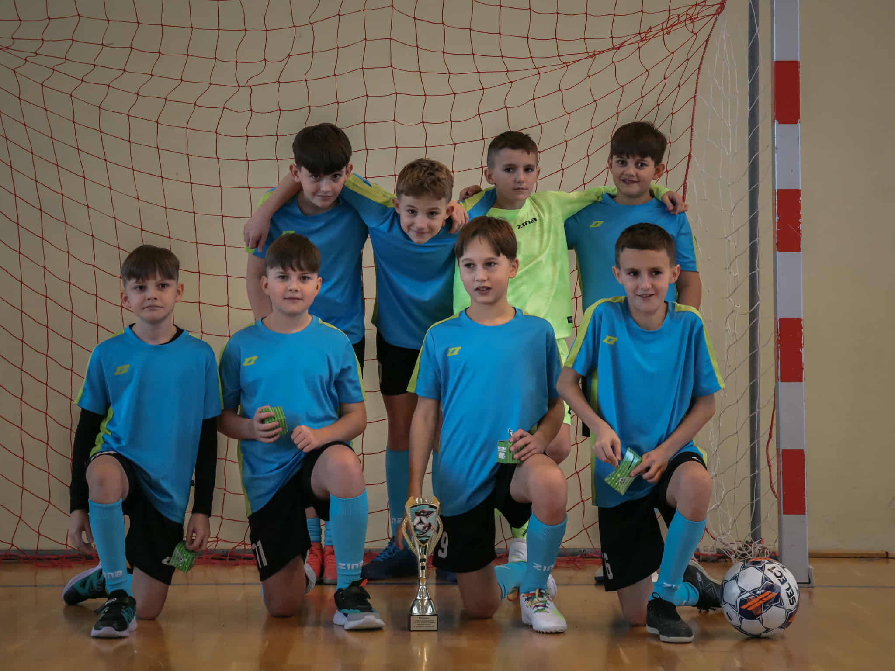
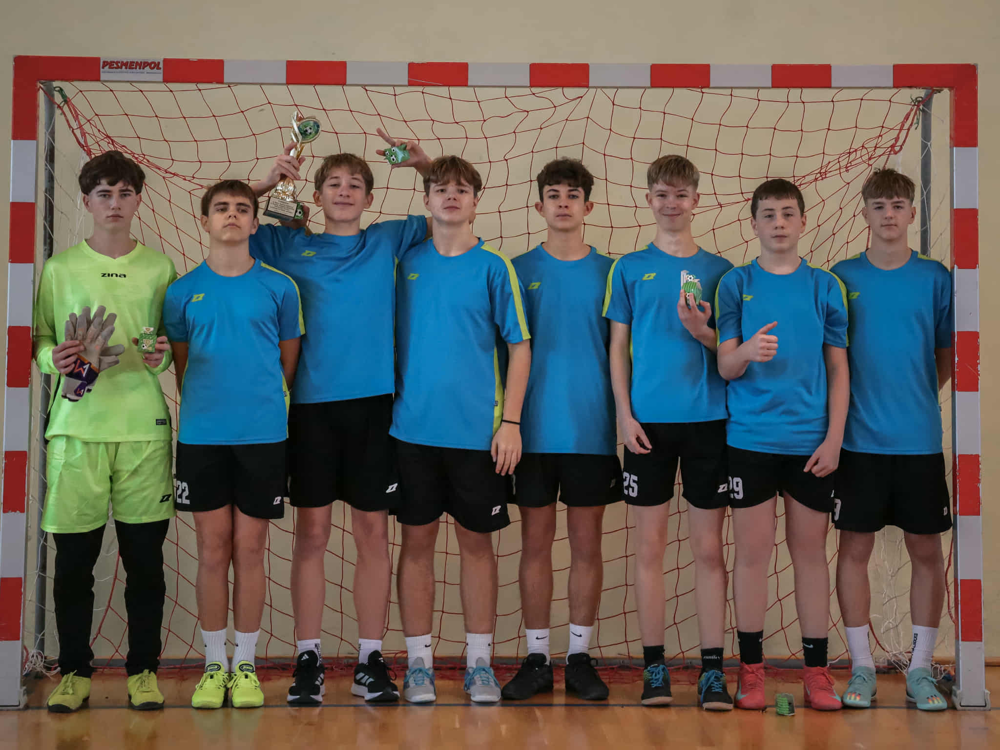
XIII Mistrzostwa Szachowe
Dziś, 25 października 2025 roku, w klubie 21 Brygady Strzelców Podhalańskich w Rzeszowie odbył się turniej szachowy lektorów.
Z radością informujemy, że w wydarzeniu wzięło udział 5 lektorów z naszej parafii, którzy z zaangażowaniem i sportowym duchem rywalizowali przy szachownicach.
Po zakończeniu turnieju uczestnicy udali się do Jodłowej, gdzie odwiedzili wieżę widokową, podziwiając piękno jesiennego krajobrazu.
Dziękujemy naszym lektorom za godne reprezentowanie parafii i życzymy im dalszego rozwijania talentów oraz pasji — zarówno przy ołtarzu, jak i poza nim.
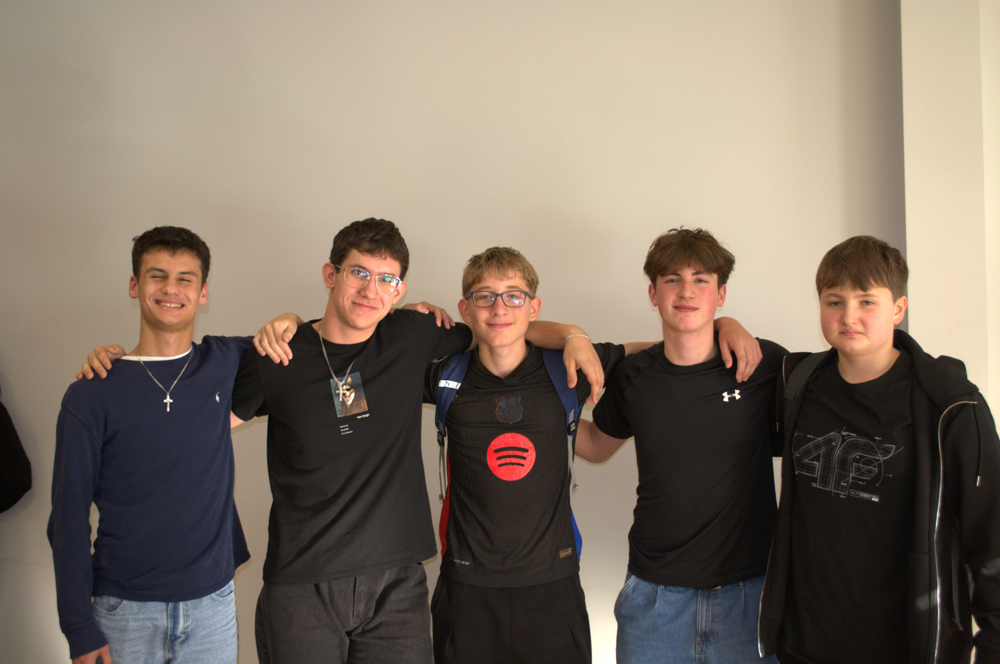
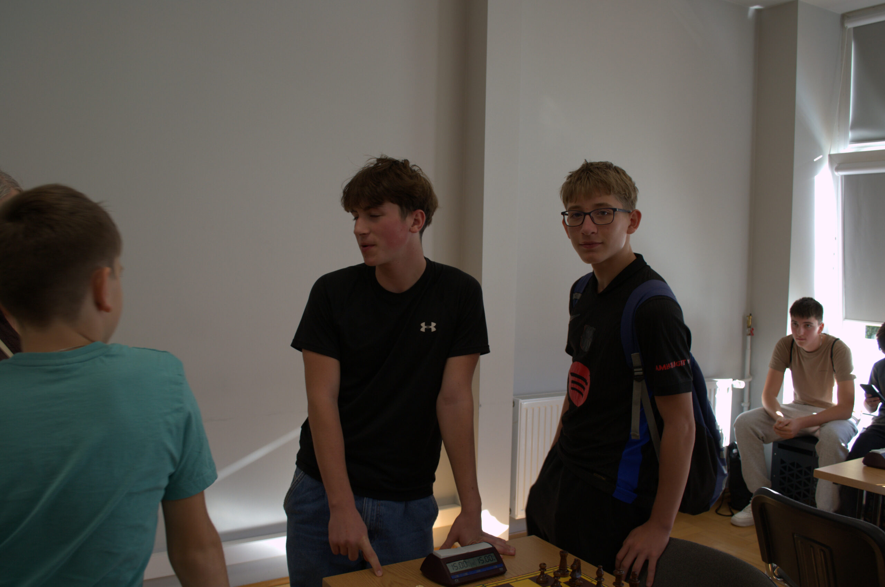
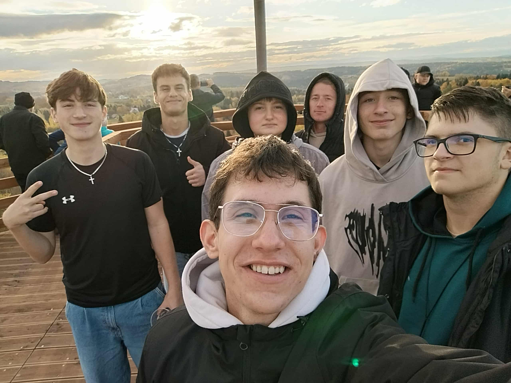
Błogosławieństwo Animatorskie
Dziś, 29 sierpnia 2025 roku, o godzinie 9:00 w Wyższym Seminarium Duchownym w Rzeszowie, 48 lektorów naszej diecezji otrzymało z rąk Księdza Biskupa Jana Wątroby błogosławieństwo animatorskie.
Z radością informujemy, że wśród nich znalazło się 3 lektorów z naszej parafii
- An. Dominik Kożuch
- An. Gabriel Bogdan
- An. Łukasz Piecuch
Otoczmy ich modlitwą, prosząc, aby Duch Święty prowadził ich w dalszej posłudze w Liturgicznej Służbie Ołtarza i w życiu codziennym.
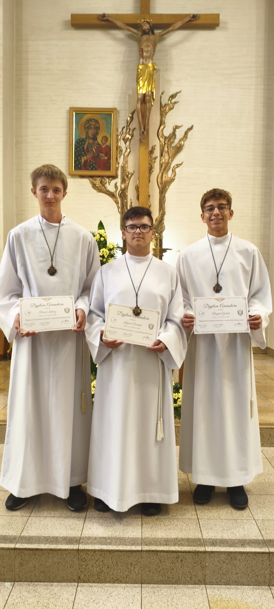
Turniej FIFY
W sobotę, 28 czerwca 2025 roku, odbył się Turniej FIFY. W rozgrywkach wzięło udział 7 ministrantów – każdy dał z siebie wszystko, a rywalizacja była naprawdę zacięta, szczególnie w finałowych meczach!
Najlepsi okazali się:
🥇1 miejsce – Antoni Szary
🥈2 miejsce – Antoni Gniady
🥉3 miejsce – Miłosz Smoła
Serdecznie gratulujemy zwycięzcom! 👏
Turniej był nie tylko świetną zabawą, ale też okazją do budowania wspólnoty i zdrowej rywalizacji.
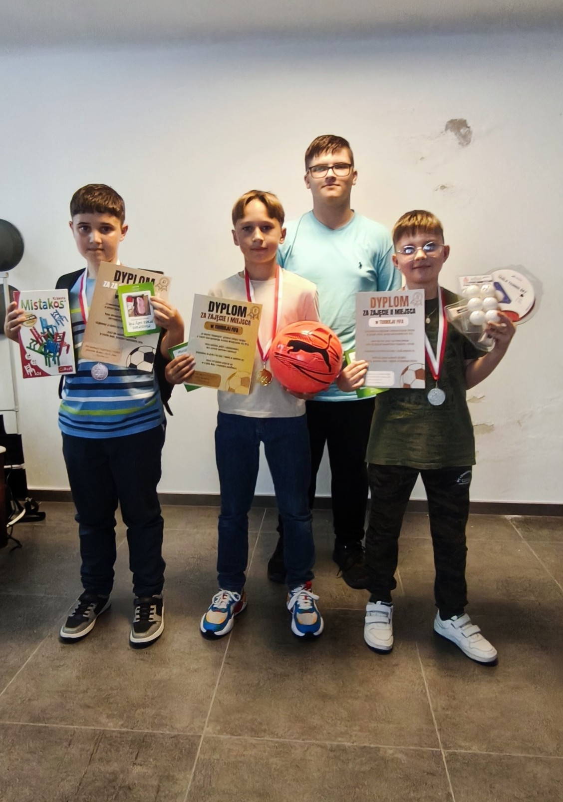
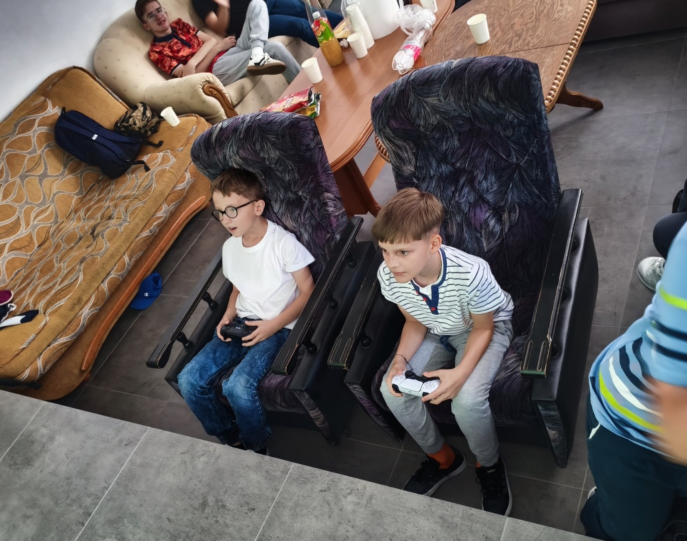
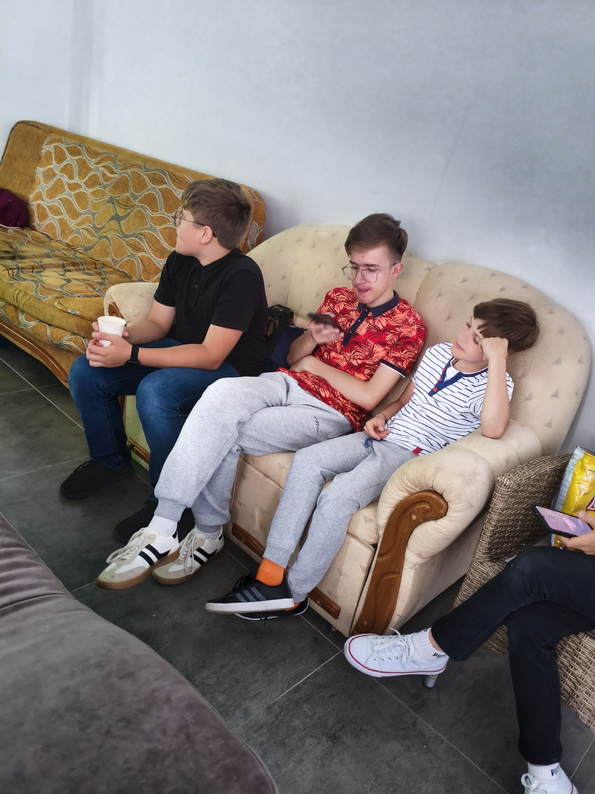